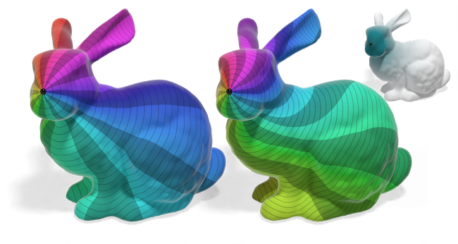
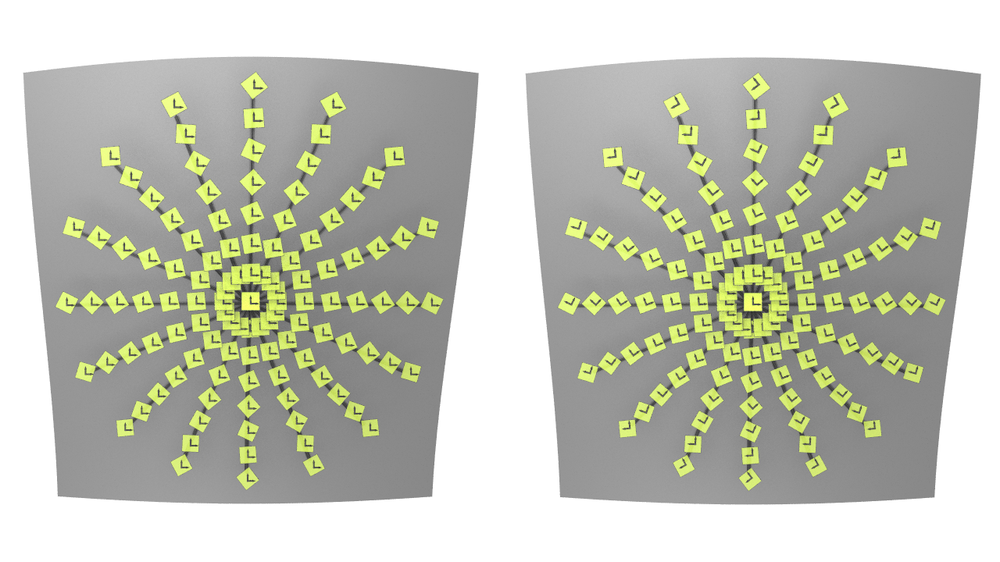

Discrete Torsion of Connection Forms on Simplicial Meshes
ACM Transactions on Graphics (SIGGRAPH 2025)
Theo Braune*, Mark Gillespie*, Yiying Tong, Mathieu Desbrun
Discrete connections are a staple of vector field design and analysis on meshes, but the notion of torsion of a discrete connection has remained unstudied. This is all the more surprising as torsion is a crucial ingredient of the smooth theory, underlying the fundamental theorem of Riemannian geometry. We extend the existing geometry processing toolbox by developing a theory of torsion for discrete connections.

A Discrete Exterior Calculus of Bundle-valued Forms
Arxiv preprint arXiv:2406.05383 (2024)
Theo Braune, Yiying Tong, François Gay-Balmaz, Mathieu Desbrun
The discretization of Cartan's exterior calculus of differential forms has been fruitful in a variety of theoretical and practical endeavors: from computational electromagnetics to the development of Finite-Element Exterior Calculus, the development of structure-preserving numerical tools satisfying exact discrete equivalents to Stokes' theorem or the de Rham complex for the exterior derivative have found numerous applications in computational physics. However, there has been a dearth of effort in establishing a more general discrete calculus, this time for differential forms with values in vector bundles over a combinatorial manifold equipped with a connection. In this work, we propose a discretization of the exterior covariant derivative of bundle-valued differential forms. We demonstrate that our discrete operator mimics its continuous counterpart, satisfies the Bianchi identities on simplicial cells, and contrary to previous attempts at its discretization, ensures numerical convergence to its exact evaluation with mesh refinement under mild assumptions.